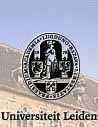

|
读经：希伯来书十一章
第一节：
「信就是所望之事的实底，是未见之事的确据。」
第二节：
「古人在这信上得了美好的证据。」
第三节：
「我们因着信，就知道诸世界是借着上帝话造成的；这样，所看见的，并不是从显然之物造出来的。」
第六节：
「人非有信，就不能得上帝的喜悦；因为到上帝面前来的人，必须有上帝，且信他赏赐那寻求他的人。」
第八节：
「亚伯拉罕因着信，蒙召的时候，就遵命出去，往将来要得为业的方去；出去的时候，还不知道往那里去。」
第十三节：
「这些人都是存着信心死的，并没有得着所应许的，却从远处望见，且欢喜迎接，又承认自己在世上是客旅，是寄居的。」

第一节提到「信」与「望」之间的关系，「信」与「未见之事」的关系。第二节提到「信」与「证据」之间的关系。第三节提到「信」与「知道」之间的关系，「信」与「创造界」和「被造界」中间关连的关系的关系。「信」与「能见界」和「不能见界」之间那相互统
一的关系。第六节提到「信」与「神的感情」的关系，「信」与「神的恩典」之间的关系 To believe in the
existence of God, and
to believe in the grace of God. 第八节提到「信」与我们的「动做行为」之间的关系，「信」与对「所应许的不能完全知道的未知数」之间的关系。第十三节提到了「信」与「神的应许」与「我们的感情」以及我们对世界方位，我们在今世的方位的认定之间的关系。这里所要谈的每一节都可以好好的组织成一些东西再来一个讲座。单单这一章就可以讲几天的讲座了，单单这几节圣经足够你思想一生很重要很重要的原理。
我想第一次我在新加坡主持的「罗马书讲义」的第一章里面我提到了「由于信以致于信」的一些些原则。在那一次的讲座中间我提到了「被否定掉的四个罪人中间的前题」。可能你们要从头回去听从前讲罗马书第一章，那时候可能你们还不在，那可能是十年前或者是十一、二年前，那时候你还在幼儿园或者是小学，你还听不懂，你的理性还没有发展到今天这个地步。在那个「由于信以致于信」的前题之下，保罗已经否定了「由于知以致于信」，「由于明白以致于信」，「由于看见以致于信和「由于经历以致于信」的四大前题 The four presupposition produced by the fallen reasoning power
of man have been denied. 许多人说「我明白了我才信」，「我知道了我才信」，「我看见了我才信」，「我得到了证据以后我才信」，还有「我经历过了我才信」。全本圣经给我们的前题是否定这四个堕落以后的错误前题的。圣经说不是因为「知」然后产生信，圣经说是因为「
信」所以产生信 Not from reasoning to faith, but on the the contrary from faith to
faith. 「由于信以致于信」是圣经的原则。「由于知以致于信」是堕落的理性所产生出来的一个前题。「你先给我证明我才来信！」这照样是人犯罪之后产生出来的前题，而今天的圣经就给我们看见完全不同的次序。你在第一节里面看到什么呢？
「信就是所望之事的实底」，先有「信」然后才「看见」。所以这个盼望是从「信」产生出来的，是「未见之事的确据」，这个「证据」就是「信」的本身，而那个没有看见的在「信」里找到证据。第二节「古人在这信上得了美好的证据」，所以由「信」产生「证」，不是由「证」产生「信」
You prove first, then I believe。圣经的原则刚好反过来 You believe first, you will be
given evidence. 上帝要把那证据赐给那些有信的人，所以基督教对「信」的观念在圣经里面有一个很统一的，前后一贯，是贯彻始终的原则
consistency of biblical principle。
有一些人把圣经看得一文不值，这样的人实在是一文不值的，因为他们没有看见圣经中间的价值任何一个时代的科学哲学没有办法超越或者否定的。我再讲一次，圣经里面有一个很特别的 consistency 那个贯彻始终的普世原则、超时代的统一性，这个东西是很少人很注意，或者很强调的把它发挥出来的。很多人根本没有看得很清楚。所以圣经里面没有提到「因为有证明了所以我来相信」，圣经提到「因为你信了就把证据给你」。这样，「信」是「证」之因，而「证」不
是「信」之因，次序刚好是倒过来的。许多人说「你给我看见了我才相信，你给我印证了我才相信」，圣经刚好反过来。在这一章的圣经我们读的第一、第二、第三、第六、第八、第十三节都有很多次序的那个连贯性在里面。启示圣经的圣灵从第一本到最后一本本身是超越时间的，虽然在一千六百年中间，k有一个连贯性。你如果注意神学家，每一个神学家早期的思想和后期的思想都发生很大的变化。你注意毛泽东的思想；毛泽东会自己打消自己的思想。毛泽东思想在早期
和后期中间你发现产生了变化。不要说，连传道人有时候第一天讲的和最后一天讲得都不一样。还有一个传道，一个刚刚神学院毕业不久的传道人，前面讲的和后面讲的不一样。那种在时间中间被分割的非联贯的片断真理式的传达，很可能是因为他没有咀嚼消化清楚，然后在这里拿一点材料，那里拿一点材料硬拼起来的。但是全本圣经你看见有一个连贯始终，贯彻始终的那个绝对肯定的恒常性
consistency，这个恒常性不是「无常性」，这恒常性就是神的道可靠的地方。
感谢上帝，我想这些我不要讲太多了，我要继续提到连到昨天继续思想下去的那些很重要的原则。我们昨天提到了关于真理一定包含「事实」，但是事实不能代表整个的真理。真理的本身一定有事实的成份在里面，因为真理和事实不能隔开。「你讲的是真的吗？」你说「是的，我讲的是真的。」但是这个「事实」的本身不等于完全是真理。
|
比如说在法院里面有一个人说「我做见证，犯强奸女子罪的就是这个人。」当你讲说「是这个人」，因为你清楚看见他，你可以做见证，你是很诚实做见证的时候，你是把「事实」提出来了，你说「他强奸了人，他做了这个事逃走了以后我看见了他，他还在那里整理他的衣服，他的行动非常可疑，而这个是不能逃脱我的见证的。」
|
|
但是当你正在做这个见证的时候，你是正在指出一个事实，然后法官问你「你讲的是真的吗？你是凭着诚实的良心讲的吗？你为你所做的见证敢发誓吗？」这个是什么？这个是要用真实的「动机」和「良心」来印证你实实在在替真实的事情做见证。当你说「是的，我敢发誓，我
所讲的是真的，是诚实的，他实实在在是那个人」的时候，你正在把一件真理提出来，把一件事实提出来，把一件真实的事情提出来 the fact is that。但是，这个事实和这个真实发生过的事你真正讲出来的是不是真理的本身？不是！因为这奸污女子，或者犯了强奸罪恶这一件事实虽然是事实，这一件事情却不是真理，你明白我的意思吗？所以，到底哪一种事实是真理？哪一种事实不是真理呢？你说，「二加二等于四」这是一件事实，
这是一件 fact，因为这是实实在在的。二加二就等于四，四也就等于二加二，这个是事实，而这是真理的一部份。这样，真理一定包含有真理的成份，而事实不能等于就是真理，你接受了吗？
我们昨天提到莫斯科《真理报》的事情，我想今天不重复了，昨天没有来的，你当然不知道要怎样懊悔，不过你可以听听录音带，帮助你知道怎么懊悔而不必懊悔。我们提到了事实之上有「动机」的成份在里面，当你讲一件事是真的时候，圣经要求我们讲诚实话以前要用爱心讲，所以「用爱心说诚实话」（以弗所书：4 章 15 节）圣经的要求是「真理」包括了「动机」。如果一个人所说的都是对的，没有错，却不是存着良善的动机做出来的，这还不是在真理的范围里面
，虽然他讲的都是事实。把「真理的动机」和「真理的事实」连在一起的时候，你比较靠近真理了，但是行出来的时候变成「伦理」界的东西，所以真理不但有事实，有内心的动机，有外界伦理的表现，还有真理在次序中间（今天我们要讲的是很重要的）。我相信我们每一个人要好好思想什么叫做「重点」，什么叫做「次序」，什么叫做「关系」这三个要点
The center point, the order and the relationship, mutual relationship. 当你看一段东西的时候，
你要看到它的重点在哪里？免得你的注意力和你的分解完全的化解在片断中间没有统一的思构，这个叫做「重点」。
第二、次序要清楚。第三、在不同次序中间，在各个等级中间的那个事实与事实之间的关系要弄清楚。解经是如此，看事情是如此。
柏拉图讲过一句话，这句话让我思考很久，但是我认为很有道理。我佩服那些能把大的与小的，小的与大的分清楚的人。那些知道什么是重要，什么是次要，什么是大的，什么是小的。然后把大的与小的，小的与大的关系弄清楚的人，又能够好好处理整个这些次序的人，我要一生一世跟随在他后面。柏拉图讲过这个话。能够把什么是重要的，什么是次要的，大的与小的，小的与大的之间的关系弄得清清楚楚的人，这个人当然不是普通的人。我佩服那些能把大的与小的，小的与大的分清楚的人。那些知道什么是重要，什么是次要，什么是大的，什么是小的。然后把大的与小的，小的与大的关系弄清楚的人，又能够好好处理整个这些次序的人，我要一生一世跟随在他后面。柏拉图讲过这个话。能够把什么是重要的，什么是次要的，大的与小的，小的与大的之间的关系弄得清清楚楚的人，这个人当然不是普通的人。昨天我们提到孔子讲的，「靠近真理的人是一个懂得次序，懂得本末，懂得先后的人。」「物有本末，
事有先后， 知其先后」，有始终，有本末，知其先后则什么？ ---- 近道也，你就靠近这个真理了。 所以在真理的本身包含有一种次序的了解。这种对次序的了解，不单是知识里面，更是智能里面的一件事情。所以，「次序的了解」成为我们今天我们要思考的一件事情。
在我们的生命中间有一个很重要的观念，而为了这个观念我们已经开过一个讲座，就是「基督徒价值观的探索」，我盼望有一天那个讲座可以印成一本书出来。那么这个价值观的存在，乃在乎人被神造的那个潜在的功能而产生出来的。神是价值的源头，人是有价值观念的受造者，而在所有受造界中间唯有人是有价值观念的一种生命存在
。所以人在衡量的中间就把他的价值观的功用表现出来，这是很正常 的事情。不过，价值观如果曾经受过玷污，衡量的工作就很可能不能达到那真正次序的标准。我们都是有价值观的人，你说「今天不做这个事，明天才做，今天有更重要的事要做。」你说「为什么这个更重要？」「因为照我看这个是更重要」，那个「更」字是什么意思？就
是已经「比较」了，对不对？比较了以后就把重要的先做，不重要的不先做。那么重要，不重要，最重要，太重要，有一点重要，不太重要。这些「太」不「太」一大堆的词表示什么？表示在价值观中间已
经有等级的观念。而这个等级的观念就产生了次序的安排 classification。我们如果不能把次序安排得清楚，我们很难过一个有统一性的观念的生活。
我们与计算机不同的地方在哪里？计算机直到现在还是很笨很笨的东 西。你不必有自卑感，计算机所懂得就是「零」和「一」，它所懂得就是收集资料。你把所有的资料输进去之后，它没有办法自己分门别类
，是你替它分门别类，把它放在这门，放在那类里面，它就能照着你所分门别类的把它收集下来，就是这样。然后你把你的所谓记忆功能 ，等级观念、价值、整理、组织、次序把它投入在里面，让它照着你的这个观念有次序的编排，乃是你替它排的。然后，它就照着你这个能编排次序的把所有的资料 (Data)，所有的事实放在里面， 照着你 的意思去做。你放错了一个字，它不会在用了一百次之后从错变成对 。你错了一个字它就永远错在那里，因为它是绝对忠心的。
|
|
但是，你是活的，所以当你在用那些字的时候，用了几次以后发现不对了，你会有「改过来」的可能。这个「改过来」的可能是因为你有一种觉悟是非的能力，这是计算机没有的，对不对？你要改过来的时候有价值观念对决定是非的干扰和干涉。当你干涉到你自己曾经有错而现在有新的价值观念来的时候，你就改进了，这个「自我批判」、「自我改进」的功能是计算机没有的，因为你是有生命的。所以生命有了价值观，生命就有批判功能；生命有了批判功能，生命就有等级的那个能力。
|
把事物「分等级」的能力和把不同的事实放在不同的等级里面去定位 份的时候，那是人的一个很重要的责任。所以，真理有没有等次的？ 事实有没有等次的？有。我们现在要从这个「等次」来看我们所认为
的真理应当放在哪一个次序里面？
我们昨天提到了「次序」与「关系」的问题，那么用生命去定「次序」与「关系」的问题的时候，我们就看到真理我们怎样去编排它。现在我要请大家注意，我在这里一面解释一面把一个表提出来了。在物体界的里面，所有的物体都成为我们认知的对象。「这个是什么？」我要思想它，我想通的时候，这个「物体」和「知道这个物体的本体」之间有了一个「知」的关系，我「知」了。当每次你讲这句话「我明白了」，无论你的动机如何，已经把「你」和「你要明白的东西」之间的关系用一句话表达出来了。我的理性已经可以负责任，我已经思考过了，我已经领受过某一些的符号所带来了知识冲击，使我的理性功能里面增加一些内容，我知道了。有很多事情你从来不明白「为什么是这样」，「为什么是那样」，有一天你听出来「噢！原来是这样」的时候，你说「我明白了」。有时候你看见某一个人的行动对你实在是另你怀疑，结果你查出原来他的动机不对，你说「我明白了」。当你说「我明白了」的时候，你就与那一件事情发生了一个正面的理性关系。这个正面的理性关系使你有所享受，这个正面的理性关系使你明白事情的时候有所觉悟「噢！我明白了」，「现在我才知道」。我想这些话是大家天天讲的，但是讲的里面背后的哲理的分析你从来不管它。「我明白了，我明白了」，你「明白」什么？你明白事物中间一些的奥秘。当你对物体有所明白的时候，我对物体的认识，这个物体是一个静性的。我对静性的，不动性的物体的认识，很容易产生肯定的答案。但是，「知」的过程和「受知性」的等级不是单单在这里而已，我们看见在物界中间我们有所认识，但是同时我们也看见在物界中间有那个在地界，有在天界之物。在天界之物就是一切的星球、宇宙、太阳系.... 等等的了解。 地界中间有地理、有地底下的地质和这些其它的化学物质的了解。这整个加起来是在物界里面的认识，而物界的认识所提出来各样的定律叫做「自然科学的知识」，
这叫做 science, asphere of scientific knowledge. 自然科学的知识是不是真理？在化学里面的定律是真理的一部份，在物理学的定律里面是真理的一部份，在生理学所得到的一些定律是一些物体方面的知识是定律的一部份。在天文学里面所知道的知识是事实，是真理的一部份。所以真理的最低界乃是在物界中间的知识，在物界中间的知识是真理里面最低的一种层次。但是，难道人的知识不过是为了研究物体之间的关系，物体之间的知识吗？不是。我们看见跳出物体之界的乃是「生理」的，或者「生物界」的范围，有生命的本体。有生命的本体，这样我们看见就是关于「动」的生命本体和「静」的生命本体。这样，有「动物学」的知识，有「植物学」的知识。在「动」的这方面我们看见有许许多多的品种，在「静」的这方面也有许许多多的品种，人是唯一在知识要明白各样事实的中间用价值观定层次的一个位格，人是唯一能这样定的。那我现在如果从下面去谈到上面的话，你的思想会感觉到有一点违背次序的普遍观念，所以我先把低的谈了一点以后，我跳到最高再分下来你就更清楚了。
现在，我要请大家思想圣经到底有没有把次序的观念先给我们一个重要的原则的提示呢？
|
有的，圣经告诉我们上帝创造万有的时候，k就先把万物造成了以后，然后最后才造人，对不对？这样，万物是为人而造的，但是人不是为物而造的，因为物服务于人，而人不是服务于物。虽然人对物有所需要，但是人的目的不在物，所以圣经告诉我们「万物是为人而造的」，却又告诉我们「人是为神自己而造的」。
|
|
神这样，创造万有的这位上帝就把这个次序定下来了。要人管理万有，但是神要人顺服神的管理。所以在基督教的层次和次序关系中间给我们看见了三个大的层次，就是神高于人，人高于物。
在过去的一些讲座中间曾经提过这个很重要的原则，而这个原则要经常提醒，使我们建立整个知识论的架构的时候我们有一个很重要的骨架在里面 The epistemological structrue。这个知识论的架构建立起来，我们的人生才不会混乱。现在我们就在这个很重要的等级的层次观念中间建立了一个很基本的思想，然后我们再来分类。
圣经继续告诉我们，在「造界」与「被造界」之间有了第一个本 质的差异 the first qualitative
difference in the categories 就是「造」与「被造」之间的关系。这个「造界」的关系是怎样的关系呢？是个永恒的善的本体 The
creator is in the eternal realm and is in the summum bonum realm. 所以，永恒的，绝对良善的等级是最高的等级。而我们就在良心的最深处知道，如果我能做一些事有永远的价值，又有良善的价值得话，那这件事的等级是很高的。所以，
在哲学思想里面有一个很重要的名词叫做 summun bonum； summum bonum 的意思就是「最高的善」 the highest goodness。最高的善也就是我们人生至终的目标，人追求最高的目的就是要达到那最高的善。而基督教的观念，无论从「理性」与「真理」之间的思想
，或者从「善」与「永恒」的思想来看，神的本身就是那最高的善， 永恒的真理和那永远不变的真理的本体，所以上帝就是人的至善 God is the
summun bonum of men，人应当在最高良善的目的里面建立我们整个追求的方向，而那最高良善追求方向的本体的本身在基督教的信仰里面就是上帝。换句话说，不是无中生出一个神明奇怪的观念，超自然的那个本体，而是相信有这个本体的本身从k创造万有和自然出来。这样，在「造界」与「被造界」中间有了一个很重要的本质的差异
The qualitative difference between the creator and creatures. 「被造」与「造物」之间有绝对不能混淆的本质的差异
。「造者」就不是「被造者」，而「被造者」就不是「造者」。「造 者」在造者的本体界里面，「被造者」在被造的现象界、受造界里面是绝对不能相混淆的，造者是造者，被造者是被造者。
这个本质的差异的第二个层次就是在受造界中间我们看见又有永恒的受造者，第二又有永恒与暂时混合的受造者，第三又有暂时的受造者。在这里面又产生了两个本质的差异，这本质的差都在同样一个本质的受造界里面产生出来的。换句话说，上帝创造了不同等次的活物。什么叫做「永恒的被造者」呢？就是「被造而永远不再消灭存在的、永远存在的受造者」。什么叫做「永恒与暂时混合的受造者」呢
？也就是「有永恒本质却活在暂时世界中间的受造者」。什么叫做「 暂时的受造者」呢？就是「被造而有一天会完全消灭，没有永恒的本质的存在的受造者」。更清楚的解释出来，就是「天使界」是在纯灵
的受造界中间，是有永恒的存在的活物，而「人」是在暂时与永恒这 个交界中间的受造者，因为人有一个暂时的身体，却有一个永远的灵魂。
第三，就是一切受造在人以下的都是暂时的受造者。无论天长地久何等的长度，何等的长久，我们看见了有限界终究是有限界；有限界因为终究是有限界所以时间既有开始的时刻，也就有结束的时刻。
时间的开始时刻是因为上帝创造「时间」的永恒旨意在暂时中间才存在的。照样，时间的终止时刻也在上帝永恒的创造旨意在时间的历史过程中间因为神而结束的。这样，神是创造时间的上帝，这位创造时间的上帝就给时间定了一个起点、一个终点。这个有起点有终点的时
间也就是成为人类历史活动的场所。这样，创造时间的上帝成为时间之因；结束时间的上帝也成为时间之终极。所以圣经给我们看见了信仰上帝是「创始」的，上帝是「成终」的；上帝是起先的，上帝是末后的。圣经给我们看见这个被造界是透过神的话而造的，而这个造成
万有的道的本身自我宣布k是「阿拉法」 (Alpha)，k是「俄梅嘎」 (Omega)。 什么意思呢？这个暂时世界的开端是因为基督而开始的叫做「阿拉法」，「阿拉法」是希腊文的第一个字，「俄梅嘎」（是瑞士的手表），「俄梅嘎」就是希腊文的最后一个字。
|
|
「阿拉法」表示 starting point 「俄梅嘎」表示 the ending point，从
starting point 到 ending point 中间我们看见 the process of history。所以在这其间程序就进展了，请你注意这句话 the process is going
on。那么造了有程序的过程的上帝是这个程序起点的源头，也是这个程序终点的归宿，所以上帝本身是创造万有的。k是时间的因，也是时间之归，归点，终点，「始终」从k而来。
|
这样，整个历史就在永恒上帝的管制之下了。如果你在基督教的信仰里，你发现了这种伟大的原理，你就知道这个信仰不是很简单的事情，也不是任何一个宗教可以与之相比于万一的一件事情。而创造程序的上帝的本身就不在程序的变化律的中间。在程序中间有变化的律，而创造程序的上帝就不在变化律的中间。
所以，无论东方文化的变化规则，西方哲学的变化原理；东方的 《易经》 The book of changes，孔子说「给我五年，十年加添我寿
命好好研究易经，我就可以减少一些大的错失了。」「假我五十足以学易可以免大过也」（参：《论语》述而第七）。在「易」里面，用 四乘二变成八，八乘八变成六十四，所以八挂，八八六十四。在里面一切变化的可能从这里来的。这些变化的程序就在始点与终点的过程中间产生出来。而上帝竟然说，「我是阿拉法，我是俄梅嘎」，这样
因为上帝就超越了整个程序的变化律，而整个程序的变化律就在k的手下。这一位上帝有资格向所有人类产生出来的所谓「神明」挑战说 ：「你们中间有哪一位神像我一样从起初指出末后的事呢？」（参：
以赛亚书： 46 章 10 节）这是神自我印证k本质独特性的一个很重要的宣告 The qualitative proclamation of
God's own existence and uniqueness。所以上帝把k的独特性用这种本质宣告出来的时候 ，就把k与万神，与所谓的「神明」的不同的地方很清楚的指出来，
成为我们信仰可靠的根据。「你们用怎样的神与我相比呢？我从起初指出末后的事情。」「我是起先的，我是末后的。」在这个历史过程中间，这里我谈的这句话「历史过程中间」是根据圣经所启发的历史观最重要的一个原则，
就是 liner type, a liner concpet of history 历史不是周而复始，变化无穷而没有办法离开这个循环不止息的这个无止的状态。历史乃是有起点有终点的一个直线式进行的程序
liner process。 因为这是 liner process 所以有起点有终点， 而这个就使我们可以产生对超历史与历史之间的关系的了解，只有基督徒可以了解历史与超历史之间的关系。而非基督徒只能在历史里面转，团团转而不知道这个历史到哪里去。历史乃是有起点有终点的一个直线式进行的程序
liner process。 因为这是 liner process 所以有起点有终点， 而这个就使我们可以产生对超历史与历史之间的关系的了解，只有基督徒可以了解历史与超历史之间的关系。而非基督徒只能在历史里面转，团团转而不知道这个历史到哪里去。而现在许多的基督徒没有看到我们要怎样在超历史的认识中间来处理历史意义的解释和历史事件
的发生。我们继续再思想下去，这样，在暂时的程序中间的就进到了一个相对界里面。而超越相对界的神的本身就自己在绝对界的里面， 而在相对界中间有绝对观念是一件普遍的事实。所以我们昨天提到，
不相信「绝对」的人是不可能的，因为当他很肯定的相信没有绝对的时候，他的肯定的本身已经牵涉了绝对的范围，你还记得吗？所以人很矛盾，做人难，人难做，难做人，结果就做难人。为什么做人难呢
？因为人就在这个「界」的里面，在「恒暂界」里面挣扎矛盾。而神就照着这样的方式，这样的方位把人放在「恒暂界」的中间。我们又不是天使，我们又不是牲畜 We
are neither angles nor animals。 所以我们就在一个人固有的很特殊的地位中间挣扎矛盾，而这个挣扎所需要的超脱只有一个字就是「信仰」。
信仰」与「真理」不是没有关系的，是有非常非常肯定而非常复杂而且是非常基要的关系。这个又肯定又基要又复杂的关系就是这几天我们要提到的，因为信仰与真理之间的关系可以透过理性对理性的限制的了解超越理性的信仰去了解超理性的，这是很不简单的事情
。但是，这也可以变成非常简单的领受。当我们把这些分析完了以后 ，我盼望你对信仰的了解有一个更肯定而且更负责的理性基础。
|
在这个暂时界的中间神再给我们一个很清楚的本质差异的分划，就是「有生命」的和「没有生命」的之间的分划。在暂时界中间我们看见神已经创造了能活着的有生命的动性动物（刚才提的），静性的植物。在无生命界里面神就给我们看见了整个物体界（刚才提的），所以在这里我们看见了整个基督教把那个统一性的，完整的真理观带出来，是没有任何的哲学体系，没有任何的宗教观念的揣摩可能达到的。
|
|
在老子的《道德经》里面，到最后就没有办法看到一位创造者成 为万有之因，只有看到道，而这个「道」是什么呢？不能再讲下去了 。在孔子的思想里面就提到了能见界的人与人之间生命对无生命的「
格物致知」，以致于生命对生命之间的「人伦关系」。「夫子之性于天道不可得而闻也」（参：《论语》公冶长第五），所以到了「天道 」的事情，孔子没有办法讲了，因为他停在那个地方「子不语怪力乱神」（《论语》述而第七）。
在第一天我们提到印度哲学的阿特曼和布拉曼，希腊哲学的 Logos 和 Logikos 里面我们也没有看见那个「创造」观念的产生。
所以创造的观念是把这个能见界和不能见界沟通在一起，很重要的一个信仰，很重要的一个真理。而这个真理的本身不是从人本猜想出来的，因为这个真理的本身是从创造界启示下来的。在这方面我要你们回头再思想我在新加坡讲过的两大专题，一个就是「启示与启示者」
，另外一个就是关于「启示与圣经」，而这两个你再沟通了以后，这个再整个联贯起来你会看到整幅的图画。如果你需要再更明白，我就不再重复了，那就是上个礼拜在吉隆坡所讲的「普遍启示与特殊启示
」，普遍启示的不足性，需要性和特殊启示怎样成为了解普遍启示的唯一钥匙 The key to understand the general
revelation is through the special revelation。把这整个编织成整个思想的地图 ，成为整个理性的架构，那你的信仰就有很清楚的交待了。
在物界中间我们看见有高的方位，但是低的次序，有低的方位也在低的次序。所以整个物界都在低的层次里面。无论它高到天上比太阳大几千万倍的星也好都在人之下。无论它低到像细菌一样那么小的一个生物，或者像很小的物质的一个介子、质子、中子小到肉眼看不见的东西一样，它无论是在天在地都是在比人更低的层次里面。在「
生」与「无生」物之间还有一个 qualitative difference， 所以这 里有一个最大的
qualitative difference between the creator and creatures 创造的上帝与被造界之间绝对不能相混淆的那个划分的界线。在被造界中间有几个界线，「永恒者」、「永恒与暂时者」
与「暂时者」之间的界线。在这个界线之下有生命的无生命之间的界线，那么人在哪里？人在这里。
所以圣经告诉我们，人被造「比天使微小一点，却管理了天上的鸟，地上的兽，海里的鱼与地上一切的一切」，直到今天人成为大地的主人翁，人成为管理一切的一切地球上的主人，这是很清楚的。但是神也给我们清楚看见，因为你有一个暂时的生活，所以你在地上要做主人做不成，有一天你要真正承认你不过是做「客人」，对不对呢
？你多么伟大， 或者在地上多么大的成就， 有一天地要对你说 Get out! Your time is up,
go! 我不知道我们能不能亲眼看见二十一世纪，因为我也要 go，你懂了？
|

|
当我在这里看自己像主人一样的，大地在我的下面，我可以做最快的飞机，我可以看见大地从我的眼前掠过去，我可以看见这一切的一切算什么？但是不久，我只能归回土地里面，那块长一公尺，宽两公尺的土地里面，在里面结束我这暂时的生命。
|
但是，我不是结束我的存在，我只结束在世界这暂时的生命， 我被造在「恒暂混合」的范围里面，我有一个永恒性要去，很奇妙的 。这样说来，对每一个层次的认识都应当是真理的。对物理学的了解是真理，对伦理学的了解也是真理，对动物界，植物界的了解是真理
，对人本身与人之间的伦理是真理，对动机对次序的了解是真理，对灵界的了解是真理，对神的了解更是真理了！因为k是一切的源头。 真理的范围就不是单单在物界的范围里面，真理的范围就与生命界发生关系了。如果我把物界当做是真理的唯一范围的话，那我对真理的了解是已经受了很大的折扣了。
现在我们要在这三个程序里面，用三个拉丁文的思想来表达出来 ：我是人，我这个人不能很甘愿做人，除非我好好思想到底什么是什么。「我」是什么？「物」是什么？「非我」是什么？「我」与「非
我」之间的关系是什么？所以人是一个发问题的人物。如果没有问题的人一定是「问题人物」。而有问题的人是发问题的人物，而人被造是为了发问题，所以连中国人都明白什么叫「学问」，就是学了要问
，问了再学。有学没有问的人是「填鸭式」的知识的自我充实，但是却不是经过计较、了解、从怀疑产生的纯正信仰。我再问，在我问的时候我在思想，在这思想的中间我看见，思想的本身到底是怎样的一个本体？我想一切的时候我变成思想的本体，我的思想变成思想的本体，而思想这思想的本体的时候表示思想有了思想的功用。而我的思想正在思想什么的时候，那个「什么」成为我的思想正在思想的课题
。 这样，I am thinking，我正在想，我是一个有理性的人，因为神把理性放在我里面所以我才能想，我能想所以我才是一个人。「能想
」是很合理的，而当我想自然界刚才所提到这些众界的事情的时候， 你就发现我的思想功能有许多许多对等次不同的次序之中的要求了解 。我要了解地上的东西，我要了解天文学的东西，从天文到地理所有
这些东西的范围多得不得了。地质学、地理学、化学、物理、环境学 、空气学、流星学、太阳系的学说。诸天、星云一直到大宇宙，一直 到一切一切在最遥远的所有的星之间的学问，这些加起来整个的是什么？这个整个的加起来叫做「自然科学」。我把它放在很低的层次，
因为这个是很容易得到答案的。当我正在研究物的时候，物就在我的下面，所以我对物的了解是很容易得到答案的，为什么呢？在这个容易了解物的答案的层次中间，本来上帝造物是为了我而造的，所以这里我们看见一个很重要的原理，就是「目的」与「层次」之间的关系
。什么是为了什么，那个目的的要点就比目的的追求者，追求目的的是更重要的。如果物质的存在是为了我的存在，那我的存在是高过物质的存在。如果你认为人生是为了金钱，那么在你的价值观里面「钱
」是比你的「生命」更重要的，你明白吗？但是你的价值观会错，所以你把不重要的当做重要。原先是说「钱」为了你，你不是为了「钱 」，这样，钱为了你，你是比钱更重要，应该是如此。所以什么是为了什么，那个目的的本身就把层次分开来。现在，这个放大机把我所写的放大在墙壁上，这个放大机的目的是为了要把我的体系把它表达清楚，传达我思想里面的东西成为你们更了解的一层的东西。那么，
这个机器是为了服务于我的理念，所以我的理念就比这个机器更重要 ，接受吗？
录音机是为了把伟大的声音录下来，把伟大的理论录下来，所以录音机是为了那个理论，而那个理论不是为了录音机。这样，录音机就比那个理论更不重要。从这个角度来看，你就发现了许多科学的成就是很低级的成就，因为它为了要把很伟大的思想传留在这个世界上，把它记录下来。当你看见「咦，这句话很重要」、「这个思想很宝贵」，你就认为很可惜如果不记下来就忘记了，很可惜，你连会忘记都会保证的，你好象很知道自己会忘记，所以快快把它记下来。当你记下来的时候，你的目的是什么？你的目的就是让这个伟大的道理不被时间淘汰掉。这样，这个道理的本身就超越时间性，所以才值得记下来。而你记的时候你用的工具就是笔和纸，笔和纸的存在就是为了服务你要达到的那个目的。这样，每一个要被达到的目的就自然比要达到目的的过程中间任何一个事物有更高的价值。这样，圣经给我们看见这个层次的产生从「目的来定价值」的原则是很清楚的。上帝为人造了万有，万有都是为人造的，所以人的目的是万有服务的终点，
人的价值是高过万有。但是，神为自己创造了人，人到最后把神当做自己的至善 God is the summun
bonum of men。 人追求到最后能够与神合一的时候，这样，神就比人更高了。
|
从这个层次来看，我们看见，第一个层次的知识，或者叫做「事实」；天文的事实，地理的事实，光的事实，数学的事实，地质的事实，化学原理的事实，各种元素的事实，还有各种地质里面变化的事实，地震怎么发生的事实，这些原理的记录就变成了汗牛充栋在你的图书馆里千千万万的书把这些科学研究的事实记载下来，这些科学事实是在自然的范围里面所领受的科学。
|
|
什么叫做「科学」？「科学」是从希腊文的第一个字出来的 Scio，就是「我知道了」 I know。 从这个范围里面我们看见了，「
知」在真理的范围里面是第一界。但是，当我们提到了人自己伦理、 动机、行为、生活的问题的时候，我们就想什么？不是单单想物界的问题，如果单单想物界的问题而产生自然科学这个叫做「知」的话，
这是很正常的事情；但是当我们思想了关于自己的事情的时候，就想到人与人之间的关系，这个叫做「伦常的原理」，这个就叫做超过物质的真理了，是伦理性的知识。这伦理性的知识常常很难肯定的，所以数学里面二加二等于四可以很简单算出来。E
等于 MC 平方还是可以很简单的算出来的，这些很深奥的东西结果可以很肯定的算出来以 后，一个科学家讲了以后，另外一个科学家可以证实、证实、证实、 ....，就表示什么呢？表示它逃脱不了它是静性的，因为静性的容易下定义。简单的做一个比喻：你画一朵花的时候，你很容易画成功；
你画一个人在生气的时候，你很难画成功。为什么？因为这朵花很静静乖乖的给你画，它不动的，所以你就画了。当一个人正在生气的时候，你刚刚画一半，他气完了，再气的时候不一样了。所以那个动性的使你很难捉摸，你明白吗？所以在这个界的范围越高的时候得到准确性的事实就越难。因为得到准确性的事实越难，就产生了「越不容易被信靠」的一个很合理的结果。所以你把一个物体交给十个科学家研究会找到十个科学家相同答案的肯定性的知识。但是你把一种很奇怪的病带给十个医生查到底是什么东西产生这个病因的，你会发现十
个医生会给你不同的十个答案。你把一个神精病的人交给十派的心理学家去分析他神精病的来龙去脉的时候，你发现弗洛伊德、阿得勒、 和华特生的、 和荣格的....
不同学派的心理学产生出来的答案一定不一样。
所以在这里看见，越高层的知识对肯定的绝对越不能达到。所以很多人在二十世纪的时候就认为不可能达到真正答案的东西不必去信它。因为不能达到肯定性的答案，「算了，反正我们盲目信从都是不合理的事情！」我告诉你，不是不合理，那是高到一个地步，连理性要达到肯定的答案都很难的。
|
|
两年前有一幅图画突然间卖了四千八百万美金，或者等于九千五百八十万新加坡钱。九千万？哇！你说这图画一定大得不得了，有没有像世贸中心这样大？我告诉你，就像你坐得椅子再大一点点。哇！你说「这个图画一定是金钢钻做的。」不是，是一块已经差不多一百年的布上面的一张图画。「这个图画一定画了很特别的精神？」不是，只有几朵花，而这几朵花真花才卖几毛钱，向日葵，谁画的？梵谷 (Vincent Van Gogh, 1853-1890) 画的。
|
这个人活着的时候有时候连吃饭的钱的都没有，这个人活着的时候因为失恋、痛苦、孤单、神精质、曾经痛恨自己，把一把利刀放在耳朵上把它切断了。这是「马勒今」，
「马勒古」是古代那个嘛（参：约翰福音：18 章 10 节）， 是不是？你还听不懂。马勒古古代耳切断了，马勒今今代耳朵切断了
。马勒古是给彼得切断的，他是自己切断的。后来他的弟弟知道这个事情，吓死了，把他的耳朵压在他的脸上，带到医生那里去缝，结果他也是神精病而死。像这样的一个不正常的人，苦的时候那个向日葵
的花瓣，片片都要跑出去。但是很奇怪的，我从九岁的时候就发现梵谷的图画正在讲话。我这句话你听了好好去思想看看对不对？梵谷所画的东西，每一笔都在讲话，这是很多画家没有办法表达出来的。我想会画图的每一个都会，我们小的时候画图，画的牙齿像万里长城一
个一个的。我们每一个人都会画图，但是梵谷的图画，他画一张椅子 ，那张椅子好象正在对你讲很多话，「我在这里，我正在这个房间里面，曾经有人坐在这里，现在没有人在坐了，但是我自己还是一个椅子」好象在讲话。
所以 Art 到底是什么？ 艺术是什么？ Art conveyed something. Art is a representation of the
Logogs， 道的传递者。而那个道在自然界中间做一些形像的传达，在艺术家里面才能看出来，我们看不出来，奇怪的。几朵花你看了，算了，闻一 闻，臭臭的，很久没有换水了。但是，到底在艺术家的眼中他看见什么？我很奇怪的。我们所看的东西忘记了，用照像机拍了就可以记得
了，但是照相机所看见的就是没有心灵的东西，而艺术家所看见的就是有心灵的东西，虽然所看到的东西没有心灵，但是因为他用心灵去看，以后连画的东西画出来也把它变成心灵的表达。你看高庚
(Paul Gauguin, 1848-1903)、看塞尚 (Paul Cezanne, 1839-1906)、 你看雷诺阿 (Pieere
Auguste Renoir, 1841-1919)、 你看莫内 (Claude Monet, 1840-1926)、你看马奈 (Edouard
Manet, 1832-1883)、你看毕加索 (Pablo Picasso, 1881-1973) 、 你看毕沙罗 (Camille
Pissarro, 1830-1903)、你看德加 (Edgar Degas)、你看这些人，你大概听不懂我在讲什么吧，我不是信口胡说的，我是深入研究的。当你一张一张的去注意的时候，你发现梵谷所画的那个警察，画的家庭主妇，眼睛正在瞪着你；那个正在快要下雨的阴天，树和心看那个花
。日本人凭着什么把一张图画用九千五百八十万新加坡钱把它买去？ 我不知道。如果卖给你，你买三千块回去一定怀疑有没有买错啊？连镜框连纸全部在一起也不过几块钱，怎么会买几千万呢？但是我告诉你，这个不能了解的事情，正告诉你有一些东西不是「唯物论」可以解答的。「唯物论」永远是不能成为文化主流的哲学思想，唯物论只
能昙花一现永远被丢在一边。唯物论从来不能产生伟大的道德刺激； 唯物论不能产生伟大的艺术灵感。自从东欧洲被唯物论统治以后，我们看见他们的艺术和他们许多超然的东西都消失了，而那些伟大的心灵却是不在物质界，在受压迫痛苦之间想那些超物质界的知识产生出来。所以在超物质界的范围中间，我们看见另外一个字产生了，不是
「知」是永远不断的「想」。在这个范围里面，我告诉你，正是你不能想透而却不能放弃的真理的一部份。
有许多的真理是你不能想透但是又不能放弃的，而唯物论的真理观，「凡是不合理性的都丢掉它。」如果凡是不合理性的都丢掉它的话，我告诉你，你要丢掉的太多了。
|
你从来不知道为什么口的功用这么多只有一个，眼睛功用只有看要两个？这很不合理嘛，对不对呢？讲话、吃饭、喝水、鼻子不能呼吸它代替、还有骂人、吵架，应该八个口八个功用嘛，对不对？一个吃饭，一个讲话，一个唱歌，一个祷告，一个做见证，一个骂人，应该很多功用。为什么多功用的只有一个单数，少功用的却要双数呢？这个合理吗？
|
|
我告诉你，太多事情不合理而你就这样接受了。如果你对我说你是「无论什么都要凭着理性才能接受」，我根本就不相信你这一句话！太多事情我不能用理性去分析，但是我却不能否定它有真理的因素在里面。难道理性不能了解的东西都打入非真理的冷宫里面吗？如果是因为理性不能分析，有没有一些是超过理性的东西我要用信心去接受的呢？而信仰是不是抹煞理性的？信仰是不是违背理性的呢？我想不通的事情却竟然与我的生
命发生这么大的关系。所以这第二个范围是「想界」，思想界。不但如此，当我思想我的思想的时候，主客体就变成一个没有办法分开的混杂物了。但是，我不但在这个人与人之间的关系，生命对生命的了
解的关系上去发挥超过物质的另外一方面，比如说，「人有目的吗？ 」这不是唯物论，也不是科学所能证明的。「人有道德责任吗？」这也不是科学责任有办法解释出来的。「做人有意义吗？」这更根本不是试验室可以告诉我们的！
几年前，在阿姆斯特丹一九八六年的会议结束以后，我要参加一个很重要的小型会议，因为这个会议是要讨论今年
(1989 年 ) 在菲律宾举行的全世界分大会。 我是国际的咨询委员 (International consultant of Lausanne
movement for the world evangelization)， 所以雷登‧福特 (Leighton Ford, 1931- )、葛理翰
(Billy Graham, 1918-)，还有其它各国的代表，重要的董事会开会， 我要去。 但是当我到了阿姆斯特丹的中央车站 (central
station) 要换车到开会的地方去的时候， 我发现有一件事情使我不能不停在那里，我会迟一、两个钟头才到，我宁愿迟，我一定要很重要的看见这个事情。因为就在阿姆斯特丹的大火车站前面的一个广场
，我听见一个人正在用印尼文讲道。讲道到时候就翻译成英文，然后再从英文翻译成荷兰文，所以这个不是「三位一体」，「三位三体」 。讲一句，轮三次；再讲一句，再轮三次。我就听这印尼在荷兰讲道讲些什么。因为这三种文里面，我听得懂印尼文，也听得懂英文。我听不懂荷兰文，那也不必懂，不是我的事。这印尼人讲了。
「我为你们荷兰的教会大大痛哭，因为你们从前把福音带到印尼去，我们从前还不认识耶稣基督，现在印尼的教会兴旺，你们的教会正在没落。」这是事实。荷兰最重要的教会大大复兴了，但是荷兰的教会衰微下去，我为你们痛哭，为你们哀哭。
翻译的就翻了，I cry for you the church in Holland because you has
brought the gospel to my country....，他翻译就再翻荷兰文了。当大家很注意听的时候，一个小姐，我想大概 in
between 二十二到二十四岁之间 ， 就大发脾气， 骂起来， 「 Go back to Indonesia! We do not need
anything we had thrown away to be brought back to our country. 我们所丢掉的东西，你不必带回到这里来。
」这句话很有兴趣，原来基督教是荷兰丢掉的，而「丢」是丢掉印尼去的，那我们在垃圾堆里面拾到了耶稣基督，他们不要了？这样吸引人的理论我没有听过的。这个不但是没有违背理性，是超越理性的，所以我就站过去了。我很兴趣的看见一个基督教的仇人正在用很大胆的态度把基督教漫骂一场。
我说，「 You hate this man? 」「 Oh yes, I hate him very much. He is very impolite.
He brings to us Christianity. Do you know what is Christianity? 」我说「 I know
a little bit. 」我说， 「为什么你很很恨它呢？ 」
|
「 You know what I am studying? I am university student of
University of Leiden. 」荷兰雷登大学是很重要的大学，程度可以与哈佛、耶鲁、牛津、剑桥相比的，雷登大学。我说，「 What are you studying? 」「 I am studying philosophy, you know? 」然后她反问我「 Do you know
philosophy? 你懂不懂哲学？」那我就慢慢移动脚步把她带到别的地方，让那边平安的讲道。
|

|
我把她移动到旁边，我说「 Yes, I know philosophy a little bit. 我也懂 一点哲学，
我也懂一点基督教。 」她说「 How do you know philosophy? 」她心里面想「你们亚洲人怎么懂哲学呢？ 」我说「 Yes,
because I am teaching philosopy. 」她说「 What are you teaching? 」我说「 All the
schools of philosophy and history of philosophy, existentialism and so on. 」我就把我教的哲学一些大纲提出来给她听。
「 Oh, so you are lecturing in philosophy. 」「 Yes. 」她就对我比较客气一点了。然后她就说「 Yes,
you teach philosophy, but do you know logical positivism? 你懂不懂什么叫 logical
positivism？ 」这个叫做「 逻辑实证主义」。我说「 I know a little bit. 」「 How can you know? 」「
I have been teaching for eighteen years. 」「 Oh, you know logical
positivism? 」「 Yes, a little bit. 」我说 。 「 What do you mean by a little bit?
You know a little bit? 」「 Yes. 」「 You know what about logical positivism? 」「
Yes, Promptly it must be positivism, and started from a French man called
Auguste Comte. 」「 Yes, that's right. 」 「 And in the recent years, in the
twenty centry developed into the logical positivism in the Vienna Circle in
the professor Ayer, and final the most important person must be Ludwig
Wittgenstein (1889-1951). 」我对她说。 「 Yes, you know. You know. 」她说「 Anything
else? 」我这么老了还给她考书， 在路上考书。 我说「 Yes, I know something about Wittgenstein, and
I know in the logical positivism there is a very very important principle,
that is anything that can not be verified in the laboratory does not exist.
」「 Yes, you are right, that is the most important principle. 凡是在实验室中间不能被证明出来的东西都是不存在的。」我们就开始谈了
。谈了以后，等到她很高兴的时候，她就越谈越小声（因为刚才很大声在骂那边），现在开始跟我有谈有笑谈哲学谈到一半的时候，我突然间问她一个问题， 她吓了一跳。
「 But, do you know, the theory that anything that can not be verified in
the laboratory does not exists, this theory itself had never be verified in
the laboratory. 」你知道吗？逻辑实证论里面最重要的理论说，「凡是不能被证明，在实验室里面证实的东西是不存在的 」，而这个理论的本身是未曾放在实验室里面被实验的，也未曾被证
实过的， 所以这个理论可能是不可以存在的。 「 Ya, I never thought about that! 我从来没有想过这样的事情。 That
is very significant, interesting. 」所以我对她说「 For logical positivism, they
don't believe in the religious truth, but for me, I don't believe the
logical positive truth, we are about the same. 我们差不多一样的。」我还不告诉她我是基督徒， 我不过告诉她，你批判别人不能实验的东西都不存在，你本身这个理论未曾被实验为什么你认为它存在呢？」我把她从根基整个打倒了，
把她整个摔下来了。 她说「 Yes, I should go to think it again and again. 」我说「 Yes,
better you go to think it again and again, and I suggest you think about
Christian faith again and again also. 你也好好再思想基督教的道理。」她感到可以接受 ， 她说「 Thank
you very much, I have to go now. 」我就说「 God bless you, bye bye. 」她一听到「 God
bless you 」， 又来了，因为「 God 」这个字是不能在化验室里面试验出来的。 所以她就说「 What did you say? 」我说： 「
God bless you, bye bye. 」「 OK. 」她就勉强的说 OK。至少她知道我懂她懂的，不能随便乱来了。 她就「 Bye bye. 」当她
Bye bye 的时候走到一半回头再瞪那个传道人一下才走。
等她走了我就上前说 May I preach? 我可以讲道吗？ 「 Who are you? 」「 I am
the speaker in the conference. 」「 How do I know? 」「 I'll show you 」我就把名牌
Stephen Tong, Seminar Leader, Conference of Amsterdam 告诉他。 「 Oh, so you can
speak. 你可以讲道。 」我就讲了两个钟头，三篇很重要的东、西文化的分析，然后西方如果不回转归向耶稣基督以后要怎么样 ，然后呼召很多人接受耶稣基督。
亲爱的弟兄姐妹，我要告诉你，今天许多人把那些所谓「不科学的东西」都打入非真理的冷宫，这一件事情的本身是非科学的。把你认为「不能知清楚的东西都不存在」的这种想法是违背理性的想法，
你把那些「凡是不能在实验室里证实出来的东西」都当做不是真理来肯定你这个理论的时候，你已经站在一个非真理的地步里面。今天许多反对基督教的人，自己走在一条很危险的道路中间他们不知道，正像那些相信基督教而不明白为什么信的人一样的危险。我今天不是替
礼拜堂讲话，我也不是替基督徒讲话，如果不是为了真理，我也不做基督徒。我不是因为我是基督徒所以基督教的东西都是真理，我是因为这里有真理所以我才成为基督徒的！
昨天我对你说，我不以说教的身份来把信仰的独断性的本质强迫在你的身上，我乃是与你一同站在人性探索真理的可能的程序中间引导你、帮助你进到信仰的地步里面去。今天我另外从一个角度告诉你
，我今天也不是把你当做一个只要在基督教范围里面的就是有安全感的人来鼓励你，我告诉你，在教会中间「不知为什么就信」的人，和那些在教会之外，「不知为什么就不信」的人同样是不合理而危险的
。当你清楚知道这个原则以后，你就应当把信仰、真理、与理性用很 严格的定律把它连在一起，而今天晚上我要在结束以前把一些关系提出来。这个关系我要你注意的就是「生命与真理」之间的这个关系。
人生普遍的相信真理是存在的，因为「真理的存在」这个基本的信仰使我们产生了意义的追求，和我们劳苦价值的肯定。因为真理是存在的，就促进了科学家在假设中间盼望达到的成果以致于他们不厌其烦，继续不断研究，达到今天的成就。所以「生命」与「真理」不
可能是没有关系的。「生命」与「真理」之间的关系要怎样去正常化？怎么样去肯定，怎么样去达到最高的果效和价值，那是另外一件事情。但是，我们先要肯定「生命」与「真理」的关系是一定要肯定。
「真理」与「生命」之间的关系是不能被忽略的，没有真理做为追求的内容，没有真理做为生命的方向的人是很可怜的。人需要有真理的观念，有真理的肯定，有相信真理存在的信仰，使他的生存有所基础
。接下去我们思想，我的生命与真理之间的关系乃是一个超过我们理性所能完全了解的关系，因为真理大到一个地步，当我们的理性不能接受的时候，我们不等于已经推翻它的存在。真理大到一个地步，当我们理性不能完全了解的时候，我们还不等于已经可以肯定怀疑它，
或者废除它在我们生命中间的必须性 The necessity of the truth in our life
can never be denied, simply because we are not able to totally understand
what truth is. 这是不可能的。所以我们在追求真理的过程中间，当理性发生困难的时候，我们还需要跳跃到一个用整个的生命去肯定那超越理性的真理是我们存在必须的一件重要的内容。这些话我不再重复了，我希望你们在录音带里面再一次，再一次听，好好去思想去分析，我们的时间非常有限。
我们继续思想下去，当我「知」真理的时候，我得到享受。当我知真理的时候，我得到喜乐。我「知道」了！我「明白」了！我想这种真理与我的生命里面对「知」真理可能的结连而带来的享受、喜乐的果效是没有任何其它的事物可以代替的，你明白吗？
|
|
你曾经有过这样的经验？从「不知」变成「知」；从「不明白」变成「明白」；从几十年盼望知道而没有人给你解答，结果忽然间得到一个解脱，那种恍然大悟而来的快乐是任何一样东西都不能替代的，那种感觉。这种经历，这种觉悟，表示生命与真理连合在一起的时候，乃是人的价值提升的时刻。
|
The time you ascent higher and higher than your origion
state is the time you unite yourself witht the truth undestood in your
reasoning power. 「我的生命因真理而有所改变，我的生命因为真理而有所内容，我的生命因为真理的缘故有更宽阔的观念」，这句话我用更简单的名词表达出来就是「生命因真理而享受自由」。
一个在监牢里的人可能比在外面自由的人更享受自由。因为他在监牢中间有超越约束的理性的理解。而在外面的人却有不懂的观念、错误的思想带来的约束，你明白这两句话的意思吗？有人在四面楚歌，四壁围绕，无法起坐的痛苦的牢狱里面过着非痛苦的物质性生活，却在里面用信仰的超越过一个无限的享受的自由。相反的，许多人在一个非常自由的环境中间，没有监牢，没有限制，却在自己的错误观念中间把自己绑得半死。
辛尼加 (Lucius Annaeus Seneca, 4 B.C.-65 A.D.) 罗马帝国的一个伟大文学家讲过一句话：
「 The truth does not make you rich, but make you free. 」这句话不约而同的与耶稣基督在约翰福音第八章第三十二节里面的话相吻合，
而耶稣基督那句话的内容是什么呢？「你们必晓得真理，真理必叫你们得以自由。」耶稣基督说「天父的儿子若叫你们自由，你们就真自由了。」这样，基督与自由释放了人，这个释放的本身不是物质界的
，因为真理是超物质界的，所以这个「释放」的本身乃是超物质界的 ，理念界里面的自由 ----The truth set people free。在真理的观念中间，你享受无限的自由。
这样，生命因真理而被充实了，因为真理成为生命的内容。生命因真理而得释放了，因为真理使生命自由。真理在生命过程中间使生命因真理而改变了。我相信没有一个人在明白真理以后没有改变的，
而最伟大的变化， 就是观念从「误」变成「正」的那个经历 (From the wrong concept trun
and change into the right concept, that is one of the most important
success in your process of being man.)。 当你的观念在不断改正的时候，你的人生就不断的归回真理，越来越归回真理，那是你人生成长过程中间最伟大的事情。
我相信今天整个世界最难做的事情就是 the change of the concept 对观念的改变是最难的。有许多时候我盼望改变一些人，而那些人不但不要被我改变，他继续对我说「不是这样，是那样」，他要改变我
，而他所讲的什么事情我都想过了。我不是说我比人聪明，不是。我实在花很多的思想，很多很多的时间，见了很多的人，把那些程序中间许多不必要的东西都已经闪过了，闪过了，闪过了。我盼望有一天这个时代会看到整个观念的变化是圣灵要做的很大的工作。而今天许多教会，甚至灵恩教会所认识的所谓「圣灵的工作」把它研究出来是非常狭窄的东西，因为他们对整个「圣灵与真理之间的关系」是何等的大的这个了解狭窄到一个非常可怜的地步。真理的圣灵改变人的观
念，生命因真理而变化更新，生命因真理而被充实，生命因真理而被释放，生命因真理而定了真正的方向，生命因真理而产生了最稳当的把握。
这样我们也看见了，生命也因真理而被苏醒过来了。在这些重要的经历中间你看见了什么呢？生命与真理之间的关系给我们看到了生命是「被动」而真理是「主动」。我提出一个很重要的结论出来 ---- Life is still in the passive state, but truth is in the
active state. 真理充实了你，真理释放了你，真理引导了你，真理苏醒了你，是真理改变了你，是真理更正了你，真理批判了你。你是站在一个受批判、被释放、需要被充实、需要变化从「误」变成「正
」的被动体，你发现了没有呢？当我们思想「生命」与「真理」的关系的时候，竟然最后产生了这个很不同的观念，和很不同的结论，就是寻求真理的生命本身变成一个被动性的了。这个观念我相信是你所有看过的书里面几乎没有看到的，我不敢说没有人想过这些事情，但是我这些思想不是从书来的。
如果你把自己当做主体的 You always think that you are the subject
simply because you are seeking for the truth, then I shall tell you, you
still do not understand what truth is. 当你找你不见了的钢笔的时候，你是主体，而你找真理好象你找失去的钢笔吗？你是迷失者，或是真理是迷失者呢？你了解我所说的吗？
你说，「我在寻找真理！」当你在寻找真理的时候，真迷失了吗？或者从你眼中看不到？从你眼中看不到的叫做「迷失」吗？或者是你迷 失了？因为当你找回真理的时候，是「你」产生了新的方向，「你」
领受了新的充实，所以可以说是「真理找回了你」。如果是真理找回了你， 而你得回真理的结果， 是你归进正途， 不是真理归进正途 (The truth do
not need to return to the right path, but you return to the right path
simply because of the knowledge of the truth. Then the conclusion: You are
in the pasive state not in the active state。 你不在主动的状态中间，你在被动的状态中间 )。如果我是在被动的状态中间，那么这个主动的真理到底是谁？明天我们要很严肃的，很深入的提到这些重要的事情，求主帮助我们，给我们在这四天的过程中间，我们经历一个一生一世中间很少经历过的阶段，而这些东西要使你以后的日子比以前活得更美，更有价值，
我们低头祷告：
「主啊，我们感谢你，主啊我们赞美你。主啊，我们相信真理是存在的，而你告诉我们你就是真理。主啊，我们堕落失败的理性怎么样在我们这个追求真理的过程中能接受你所启示「你就就是真理」的这个真理，恳求你真理的圣灵引导我们。主啊，我们感谢你，你愿意在我们的思想过程中间用你至圣的真道来光照我们。我们感谢你，你要引导我们，求主帮助我们在人生的过程中间我们不是依靠自己，乃是依靠你的灵寻找正确的方向。主啊，愿你用真理充实我们，用真理释放
我们，用真理改变我们，用真理成为我们人生的方向，用真理苏醒我们的心性，奉耶稣的名祷告。阿们。」
|